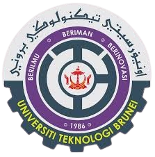

Given Brunei's continuous efforts to enhance its telecommunications infrastructure and embrace digital transformation, job prospects for students with a Diploma in Telecommunications and Systems Engineering are also favorable in the country. The following are some particular job prospects and things to think about in Brunei:
Telecommunication companies
Progresif, Imagine, DST, and other major telecom businesses are based in Brunei. These businesses regularly look to hire qualified experts to oversee, improve, and manage their network infrastructures and services.
Government and Public Sector
Information and communications technology (ICT) is a field in which Brunei's government is heavily investing in order to promote digital transformation and economic diversity. For telecom specialists, organizations such as the Authority for Info-communications Technology Industry (AITI) provide chances.

Oil and Gas Industry
The oil and gas industry plays a big role in Brunei's economy. Telecommunications engineers and technicians have chances since these businesses frequently need reliable telecommunications networks to run their operations.

Educational Institutions
Teaching, research, and technical support opportunities are possible and students who graduate from Politeknik Brunei can pursue their study in Bachelor's Degree at Universiti Teknologi Brunei (UTB) and other technical and vocational schools.